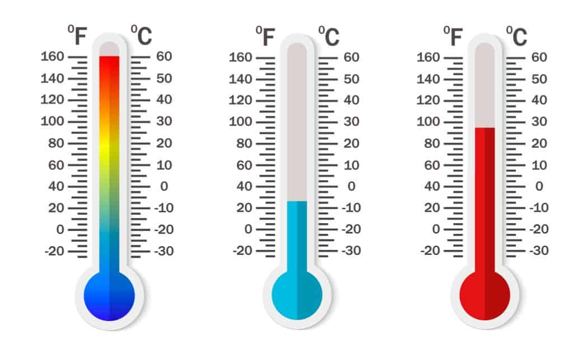

| Basis for comparision |
Celsius |
Fahreheit |
| Definition |
Celsius scale, or centigrade scale, is a temperature scale that is based on the freezing point of water at 0°C and the boiling point of water at 100°C. |
Fahrenheit scale is a temperature scale that is based on the freezing point of water at 32°F and the boiling point of water at 212°F. |
| Denoted by
| Celsius scale or simply Celsius is abbreviated as Degree C (°C). |
Fahrenheit is abbreviated as Degree F (°F). |
| The freezing point of water
| The freezing point of water or the melting point of ice in the Celsius scale is 0°C. It is the lower fixed point of the scale. |
The freezing point of water or the melting point of ice in the Fahrenheit scale is 32°F. It is the lower fixed point of the scale. |
| The boiling point of water
| The boiling point of water, as described in the Celsius scale, is 100°C. It is the upper fixed point of the scale. |
In the Fahrenheit scale, the boiling point of water is 212°F. It is the upper fixed point of the scale. |
| Average human body temperature
| The average human body temperature, as measured in the Celsius scale, is 37°C. |
The average human body temperature in Fahrenheit scale is 98.6°F. |
| Divisions
| The melting and boiling point of water in the Celsius scale is divided into 100 equal divisions, each division representing 1°C. |
The melting and boiling point of water in Fahrenheit scale is divided into 180 equal intervals, each division denoting 1°F. |
| Conversion
| It can be converted into Fahrenheit by the formula;
°F = (9/5 × °C) + 32 |
Degree Fahrenheit is easily convertible into Celsius by the formula;
°C = (°F – 32) × 5/9 |
